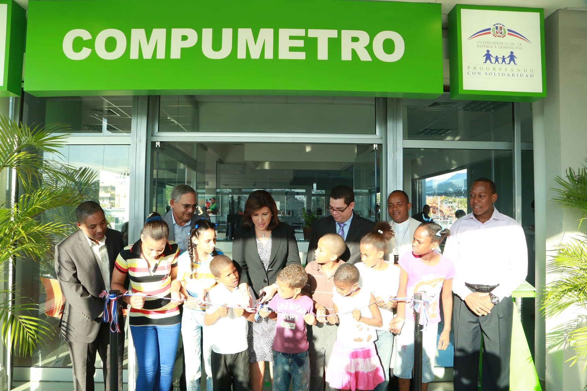

|

|
Los Compumetros: Son espacios
tecnológicos diseñados para ofrecer
servicios gratuitos de información tanto en
formatos digitales como físicos. Se
encuentran ubicados en las estaciones del
Metro de Santo Domingo.
Facilitan el acceso a la tecnología y sirven
como puntos estratégicos para la
animación y la promoción de lectura en el
casco urbano.
Con este proyecto se contribuye con el
cierre de la brecha digital, pues la
posibilidad de utilizar la tecnología de
punta y de involucrarse con el mundo de la
lectura en un ambiente totalmente sano y
abierto, empodera al ciudadano.
|

|